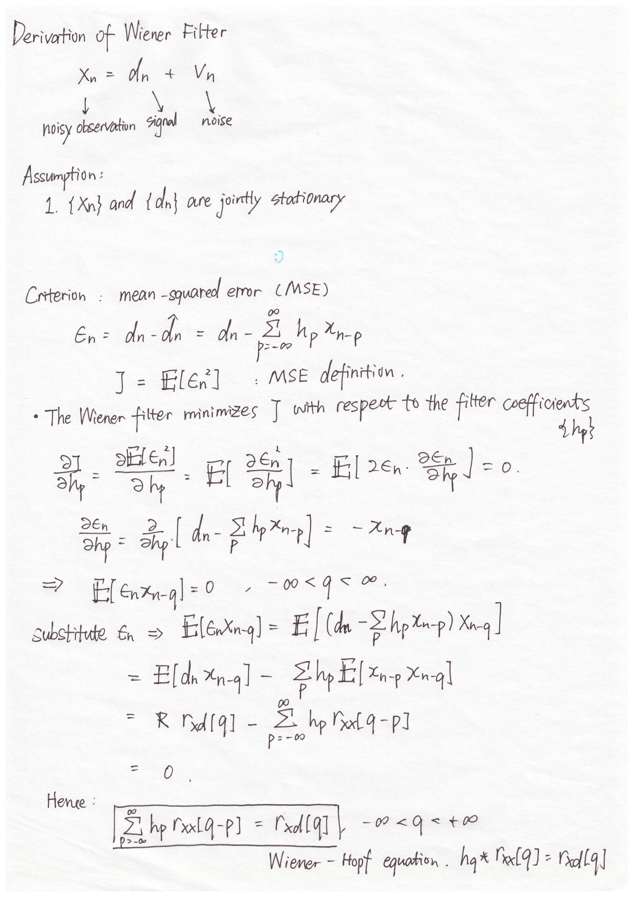
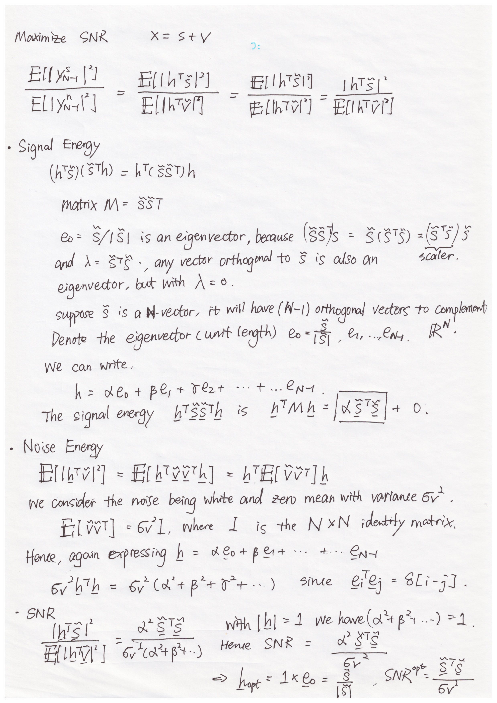
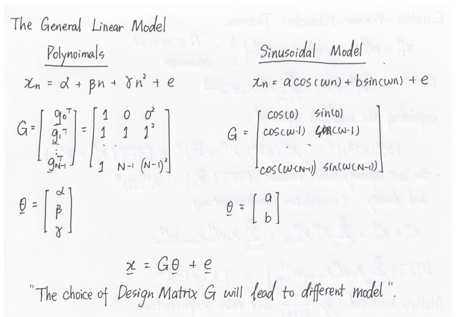
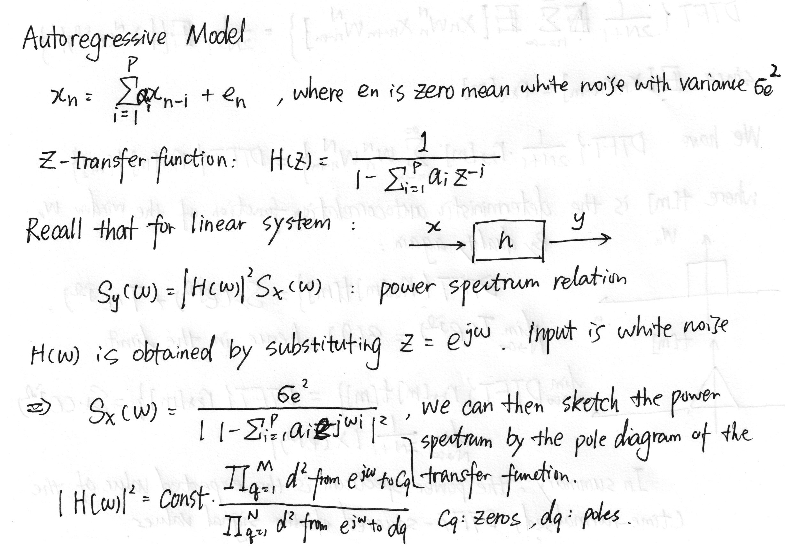
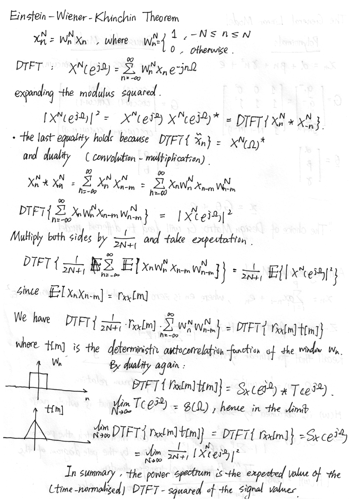
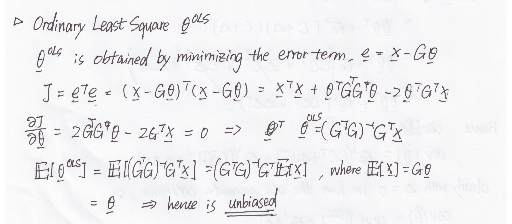

Notes on Statisitcal Signal Processing
Probablity Space
To mathematically describe a random experiment we must specifuy:
- The Sample space $\Omega$, which is the set of all possible outcomes of the random experiment. We call any subset $A
\subseteq \Omega$ an event - A mapping/function $P$ from events to a number in the interval $[0,1]$. That is we must specify ${P(A), A\subset \Omega}$. We call $P$ the probability.
We then call $(\Omega, P)$ the probability space.
Axioms of probability
A probability $P$ assigns each event $E, E \subset \Omega$, a number in $[0,1]$ and $P$ must satisfy the following properties:
- $P(\Omega)=1$
- If $A_1,A_2,…$ are disjoint then $P(\cup_{i=1}^\infty = \sum_{i=1}^\infty P(A_i)$
Conditional Probability and Independence
Random Variables
Bivariates and Conditional Expectation
Multivariate
Characteristic Function
The characteristic function of a random variable is given by $\phi_X(t) = \mathbb{E}[\exp(iXt)]$. The information of a random variable is entirely captured by its characteristic function. We can compute the $n^{th}$ moment of $X$ $E(X^n)$ using the relationship $i^nE[X^n] = \frac{d^n}{dt^n}\phi_X(t)|_{t=0}$. This can be shown by expanding the exponential as a power series:
The characteristic function is related to the Fourier transform of by $\phi_X(t) = F_X(-t)$, if $F_X(\omega)$ is the Fourier transform of the probability density function $f_X(x)$ (p.d.f.) of $X$.

Markov Chain
Let ${X_n}$ be discrete random variables taking values in $S={1,…,L}$.
The transitional probability matrix ${Q_{ij}} = \text{probability from state i to state j}$.
For it be a markov chain. We must specify that the current pmf only depends on the previous sample. This is the Markov Property
Invariant/Stationary Distribution
If we have $\pi Q = \pi$, where $\pi$ is a row vector. Then we call it the stationary distribution
If we initialize the chain with $\pi$. Then for any $n$ we have
$$p_{x_n}(i_n) = \pi_{i_n}$$
Time-series Analysis
A time series is a set of observations $y_n, n=0,1,…$ arranged in time.
AR process
An auto-regressive (AR) process is defined as the following:
Let ${W_n}_{n=-\infty}^{\infty}$ be a sequence of random variables such that $E(W_n) = 0$ for all $n$, and that the auto-correlation satisfies:
$$E(W_i, W_j) = \sigma^2 \text{ for } i = j$$
$$E(W_i, W_j) = 0 \text{ for } i \neq j$$
The auto-correlation function $E(X_nX_{n+k}) = R_X(k)$, if $X$ is W.S.S. (see definition below)
The $AR(p)$ process ${X_n}_{n=-\infty}^\infty$ is
$$X_n = \left( \sum_{i=1}^p a_iX_{n-i}\right) + W_n$$
where $a_1,…,a_p$ are constants and $p$ is the order of the process.
For a $AR(1)$ process we can expand by $X_n = aX_{n-1} + W_n = a^2 X_{n-2} + aW_{n-1} + W_n = … = \sum_{k=0}^\infty W_{n-k}a^k$. And we say that $AR(1)$ is causal with impulse response ${h_k}(k\geq 0)$
The mean $E(X_n) = 0$ and the variance $E(X_n^2) = \frac{\sigma^2}{1-a^2}$
Wide Sense Stationary
${X_n}$ is wide-sense stationary (WSS) if:
- $E{[X_n]} = \mu$ for all $n$
- has finite variance, $E{[X^2]} < \infty$
- $E{[X_{n1}X_{n2}]} = E{[X_{n1+k}X_{n2+k}]}$ for any $n_1, n_2, k$. That is, the auto-correlation function is a function of the difference of subscripts only.
MA process
Let ${W_n}_{n=-\infty}^{\infty}$ be a sequence of random variables such that $E(W_n) = 0$ for all $n$, and that the auto-correlation satisfies:
$$E(W_i, W_j) = \sigma^2 \text{ for } i = j$$
$$E(W_i, W_j) = 0 \text{ for } i \neq j$$
The Moving average $MA(q)$ process $X_n$ is defined as:
$$X_n = \left(\sum_{i=1}^{q} b_iW_{n-i}\right) + W_n$$
where $b_1,…,b_q$ are the constants and $q$ is the order of the process.
Power spectrum density
Let $R_X(k)$ be the correlation function of a discrete time WSS process. The power spectrum density $S_X(f)$ is defined as:
$$S_X(f) = \sum_{k=-\infty}^{\infty} R_X(k)e^{-j2\pi fk}$$
The inversion formula is
$$R_X(n) = \int_{-1/2}^{1/2}S_X(f)e^{j2\pi fn}df$$
In plain English, the power spectrum density is the discrete-time Fourier transform (DTFT) of the auto-correlation function.
There is another notation for power spectrum, which highlights the periodic nature of the power spectrum as follows:
$$S_X(e^{j\Omega}) = \sum_{m=-\infty}^\infty r_{xx}[m]e^{-jm\Omega}$$
where the normalized frequency $\Omega = \omega T$, in radius per sample.
The inversion formula with this notation is
$$r_{XX}(m) = \frac{1}{2\pi}\int_{-\pi}^{\pi}S_X(e^{j\Omega})e^{jm\Omega}d\Omega$$
In practice it is impossible to do the DTFT so DFT is used instead. We can show that the $|DFT|^2$ of the signal is a fuzzy version of the power spectrum density (PSD). This is called Einstein- Wiener- Khinchin Theorem
Properties
$S_X(f)$ is a even function.
$S_X(f)$ has period of $1$. (equivalent to $S(\omega)$ as period of $2\pi$) That is, $S_X(f)=S_X(f+1)$
If $R_X(k)$ is the correlation function of a discrete time WSS process then the power spectrum density $S_X(f)$ is an even, real valued and non-negative function of $f$. Moreover, $S_X(f)$ is a continuous function if $\sum_{k=-\infty}^\infty |R_X(k)| < \infty$
If the input ${W_n}$ of an LTI system with impulse response ${h_n}$ is a WSS then its output ${Y_n}$ is also WSS. The power spectrum density is given as: $S_Y(f) = S_W(f)|H(f)|^2$
$S_{XY}(\omega)^* = S_{YX}(\omega)$. Where $S_{XY}$ and $S_{YX}$ are the cross power spectrum.
The maximum of the autocorrelation function is $r_{XX}(0)$, which equals the power of the signal. This is shown by considering $E[(x_{n+k}-ax_n)^2]$
Interpretation
For a deterministic signal, the instantaneous power if $x_n^2$. The average power is
$$\lim_{N\rightarrow\infty} \frac{1}{2N+1}\sum_{n=-N}^{N}x_n^2$$
For a random process $X_n$, the expected instantaneous power is $E(X_n^2)$ while the expected average power is
$$E\left(\lim_{N\rightarrow\infty} \frac{1}{2N+1}\sum_{n=-N}^{N}x_n^2\right) = \lim_{N\rightarrow\infty} \frac{1}{2N+1}\sum_{n=-N}^{N}E(x_n^2)$$
If the process is WSS, then $E(x_n^2) = R_X(0)$ for all $n$. Thus $R_X(0)$ is the expected value of the average power.
Using the Fourier inversion formula
$$R_X(n) = \int_{-1/2}^{1/2}S_X(f)e^{j2\pi fn}df$$
We see that $R_X(0)$ is also the area under the non-negative function $S_X(f)$ between $[-1/2, 1/2]$. That shows way it is the power spectrum density.
The power spectrum can be interpreted as a density spectrum in the sense that the mean-square signal value at the output of an ideal band-pass filter with lower and upper cut-off frequencies of $\omega_l$ and $\omega_u$ is given by
$$\frac{1}{\pi} \int_{\omega_lT}^{\omega_uT} S_X(e^{j\Omega})d\Omega$$
Linear Systems and Random Processes
If we pass a WSS discrete random process $X_n$ through a stable, linear time invariant (LTI) system with digital impulse response $h_n$, the output $Y_n$ is the convolution between the signal and impulse response.
$$y_n = \sum_{k=-\infty}^{\infty}h_k x_{n-k} = x_n * h_n$$
and is also wide-sense stationary.
We can relate the output correlation functions and power spectra in terms of the input statistics and the LTI system.
$$r_{XY}[k] = E[X_n Y_{n+k}] = \sum_{l=-\infty}^\infty h_l r_{XX}[k-l] = h_k * r_{XX}[k]$$
This is the cross-correlation function at the output of a LTI system.
$$r_{YY}[k] = E[Y_n Y_{n+k}] = \sum_{k=-\infty}^\infty\sum_{l=-\infty}^\infty h_k h_i r_{XX}[l+i-k] = h_l * h_{-l} * r_{XX}[k]$$
This is the auto-correlation function at the output of a LTI system. The below figure summarizes the relationship.

The result verifies that in the frequency domain, we have
$$S_Y(e^{j\omega T}) = |H(e^{j\omega T})|^2 S_X{e^{j\omega T}}$$
which relates the output power spectrum to the input power spectrum and the linear system response.
Example: AR process
AR process is a typical example of applying a linear filter. Recall that for a $AR(1)$ process we have
$$d_n = a_1d_{n-1} + e_n$$
We can find the linear system’s impluse response by taking the Z transform:
$$D(z) = a_1z^{-1}D(z) + E(z) = H(z)E(z)$$
Hence after rearranging:
$$H(z) = \frac{1}{1-a_1z^{-1}}$$
We can obtain the frequency domain of the filter by simple substitution $z = e^{j\omega}$. This gives us the power spectrum for the impulse response.
$$H(\omega) = \frac{1}{1-a_1\exp(-j\omega)}$$
Now it is easy to derive the power spectrum of the output signal from $S_{YY}(\omega) = |H(\omega)|^2S_{XX}(\omega)$. Suppose $e_n$ is white noise with variance $\sigma^2$
$$S_{dd}(\omega) = \frac{\sigma^2}{(1-a_1\exp(-j\omega))(1-a_1\exp(j\omega))}$$
Ergodic Random Processes
For an Ergodic random process we can estimate expectations by performing time-average on a single sample function, instead having to go through the whole family of realization. That is:
$$\mu = E[X_n] = \lim_{N\rightarrow \infty} \sum_{n=0}^{N-1}x_n \text{(Mean ergodic)}$$
$$r_{XX}[k] = \lim_{N\rightarrow\infty} \sum_{n=0}^{N-1}x_nx_{n+k} \text{(Correlation ergodic)}$$
Condition of Ergodic process
For a WSS random process. A necessary and sufficient condition for mean ergodicity is given by:
$$\lim_{N\rightarrow\infty} \sum_{n=0}^{N-1}c_{XX}[k]=0$$
where $c_{XX}$ is the auto-covariance function:
$$c_{XX}[k] = E[(X_n-\mu)(X_{n+k}-\mu)]$$
and $\mu = E[X_n]$
A simpler sufficient condition for mean ergodicity is that $c_{XX}[0]<\infty$ and $$\lim_{N\rightarrow\infty}c_{XX}[N]=0$$
Optimal Filtering and the Wiener Filter
The discrete time Wiener filter
We have the basic setup as follows: a desired signal $d_n$ is observed in noise $v_n$:
$$x_n = d_n + v_n$$
Wiener showed how to design a linear filter which can optimally estimate $d_n$ given just the noisy observation $x_n$ and some assumptions about the statistics of the random signal and noise processes.
Let’s assume we have access to a non-causal filter $h_p$. THe criterion adopted for Wiener filtering is the mean-squared error (MSE).
$$\epsilon_n = d_n - \hat{d}_n = d_n - h_n * x_n$$
The MSE is then defined as
$$J = E[\epsilon^2_n]$$
where the expectation is taken with respect to the random siganl $d$ and the random noise $v$. We would like to minimize $J$ with respect to the filter coefficients $h_p$
Derivation
We assume that $x_n$ and $d_n$ are jointly wide-sense statinoary. This means that both processes are WSS and there cross-correlation function depend only on the time difference. We further assume that
$$E[d_n] = E[v_n] = 0$$
We can derive the Wiener filter by setting $\frac{\partial J}{\partial h_q} = 0$. After some algebra we arrive at
$$E[\epsilon_n x_{n-q}] = 0$$
which is known as the orthogonality principle. Since two random variables $X$ and $Y$ are termed orthogonal if
$$E[XY] = 0$$
Now, substitute for $\epsilon_n$ and we will arrive at
$$h_q * r_{XX}[q] = r_{xd}[q]$$
which yields:
$$H(\omega) = \frac{S_{xd}(\omega)}{S_X(\omega)}$$
which is the frequency domain of the Wiener filter.
Note that if we are implementing a FIR filter, then we do not need to turn to the frequency domain because we can simply sovle the linear equations.
Detailed derivation:

Mean-squared error for the optimal filter
Although the filter is optimal, there is no guarantee that the filter is useful. We can look at the MSE to see how much error we have for an optimal filter.
$$J = E[\epsilon^2] = E[\epsilon_nd_n] - \sum_p h_pE[\epsilon_nx_{n-p}]$$
We have shown orthogonality before, so the second term goes to zero.
$$J_{min} = E[\epsilon_nd_n] = r_{dd}[0] - \sum_ph_pr_{xd}[p]$$
Uncorrelated signal and noise process
If we assume $d_n$ and $v_n$ are uncorrelated, we can further simplify the expression for the Wiener filter by noting that
$$r_{xd}[q] = E[x_nd_{n+q}] = r_{dd}[q]$$
$$r_{xx}[q] = r_{dd}[q] + r_{vv}[q]$$
Hence
$$S_X(\omega) = S_d(\omega) + S_v(\omega)$$
This makes our equation for the Wiener filter as
$$H(\omega) = \frac{S_d(\omega)}{S_d(\omega) + S_v(\omega)}$$
If we define $\rho(\omega) = S_d(\omega) / S_v(\omega)$ as the (frequency dependent) signal-to-noise (SNR) power ratio. Then
$$H(\omega) = \frac{1}{1 + 1/\rho(\omega)}$$
From the equation we can see:
The gain is always non-negative, and range between 0 and 1. Hence the filter will never boost a particular frequency.
At frequencies where the SNR is large, the gain tends to unity, and vice versa.
The FIR Wiener filter
Recall the Wiener-Hopf equation for optimal Wiener filter will degrade into a set of linear equations if ${h_n}$ is finite.
$$ \sum_{p=0}^{P}h_pr_{xx}[q-p] = r_{xd}[q], q = 0,1,…,P$$
We can write this as
$$R_xh = r_{xd}$$
where $h = [h_0, h_1,…,h_P]’$ and $r_{xd} = [r_{xd}[0],r_{xd}[1],…,r_{xd}[P]]$

$R_X$ is known as the correlation matrix. Note that it is symmetric and has constant diagonals. The impulse response can then be found by matrix inversion.
In general, we requires a-priori knowledge of the autocorrelation matrix $R_X$ of the input process, the cross correlation between the input ${x_n}$ and the desired signal ${d_n}$to deduce the FIR.
The minimal MSE is given by $J_{min} = E[\epsilon_n d_n]$
$$J_{min} = r_{dd}[0] - r_{xd}^TR_X^{-1}r_{xd}$$
Signal Detection: Matched Filters
The Wiener filter shows how to extract a random signal from a random noise environment. We now turn to *detecting a known deterministic signal $s_n$, buried in random noise $v_n$
$$x_n=s_n+v_n$$
The quick result: the optimal filter in terms of *signal-noise ratio (SNR) is simply the reversed normalized signal $\frac{\tilde{s}}{|\tilde s|}$
The detailed derivation is as follows:

Estimation and Inference
Usually, we have a vector of data points $x$ and would like to infer about the model parameter vector $\theta$. $x$ is a $N$-vector and $\theta$ is a $P$-vector, we often have $|N| \gg |P|$.
The estimation task is to estimate $\hat \theta$ that is close to $\theta$. The end result is a deterministic value. The inference task is interested in the whole distribution of $\theta$, i.e., $p(\theta|x)$. The end result is a probability density function.
The General Linear Model
The General Linear Model is also known as the Linear Regression model in Machine Learning and Statistics.
In the Linear Model it is assumed that the data $x$ are generated as a linear function of the parameters $\theta$ with an additive random modelling error term $e_n$:
$$x_n = g_n^T \theta + e_n$$
where $g_n$ is a $P$-dimensional column vector.
The expression may be written for the whole vector $x$ as
$$x = G\theta + e$$

We call the left column design matrix Vandermonde matrix, whose row vectors are geometric progressions.
Autoregressive (AR) model
The AR model is a standard time series model based on an all-pole filtered version of the noise residual:
$$x_n = \sum_{i=1}^P a_ix_{n-i}+e_n$$
The above model is said to be of order $P$.

Einstein-Wiener-Khinchin Theorem
The theorem shows mathematically that the $|DFT|^2$ of the signal is a fuzzy version of the power spectrum

See derivation details below:

In summary, the power spectrum is the expected value of the (time-normalized) DTFT-squared of the signal values.
Mean and Variance of Estimators
An estimator $\hat \theta$ is unbiased if $E[\hat \theta] = \theta$. That is, the expectation equals the true value.
An estimator $\hat \theta$ is consistent if $\lim_{N\rightarrow\infty}var[\hat\theta]=0$. That is, the variance of the estimator tends to $0$ as $N$ tends to infinity.
We now investigate a few estimators and check that whether they are unbiased and consistent. We now look at the Monte Carlo Mean Estimator and Ordinary Least Square Estimator.
First, we show that the Monte Carlo Estimator is unbiased and consistent by looking at the mean and variance of the estimator.

We now turn to the ordinary least square estimator. We shall prove that $\theta^{OLS}$ is the Best Linear Unbiased Estimator (BLUE) compared to other linear estimator by showing that it has minimum variance for each parameter $\theta_i$. This is done by perturbing the matrix by $\Delta$ such that $D = C + \Delta$.


In fact, if the noise process $e_n$ is white Gaussian noise, then OLS is the global best unbiased estimator, beating unlinear ones. However for correlated noise, unlinear estimator wins over it.
Jinghong Chen @2021-2022